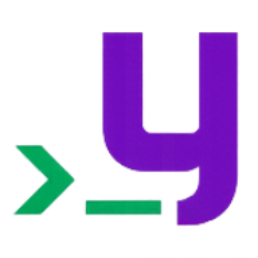

>
/
Update
Home
Search
Favourites
Library
History
Downloads
Playlists
Settings
You’re offline. Search and playback come back with the connection.
Keyboard shortcuts
Playback
Space
Play or pause
n
→
Next
p
←
Previous
l
h
Forward or back 5 seconds
+
−
Volume
s
Shuffle
r
Repeat: off, one, all
c
Autoplay
Songs
Enter
Add to the queue, or play if nothing is
Double-click
Play now
e
Add the whole list
f
Favourite
x
Download
u
Copy its link
a
Open its album; on an album, add it all
A
Open its artist; on an artist, switch tabs
d
Delete the file (Library)
C
Clear history (History)
Moving around
/
Search
↑ ↓
j k
Move in a list
1 – 5
Search, Favourites, Library, History, Downloads
7
Settings
y
Lyrics
R
Refresh recommendations
Esc
Back
?
These keys
Close
Cancel
Cancel